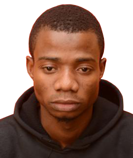

About Me

Hi! I'm OGUNSANYA TAOFEEQ, I am a Technology Expert with a high skill set in Information and Technology, I am good listener and a passionate learner, I am a fast learner, who applies my knowledge swiftly thereby making a problem solver, I am currently an aspiring Frontend Developer trainee at Youthrive I love anything that has to do with computer and Sport.